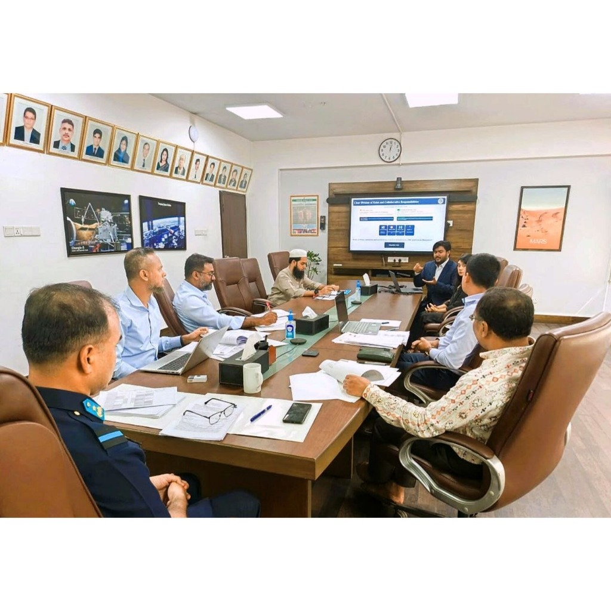
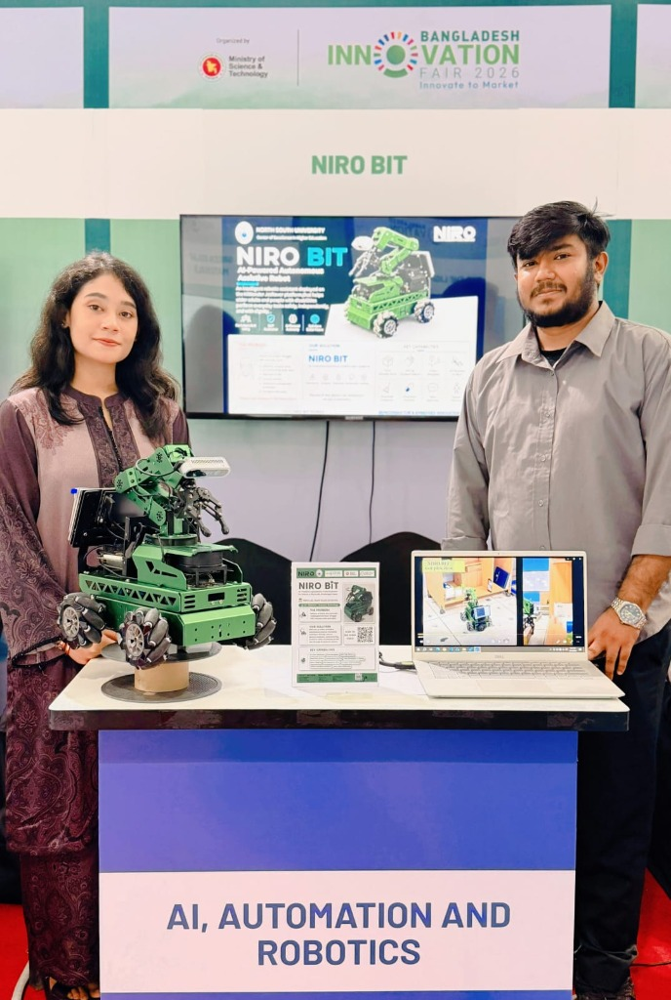
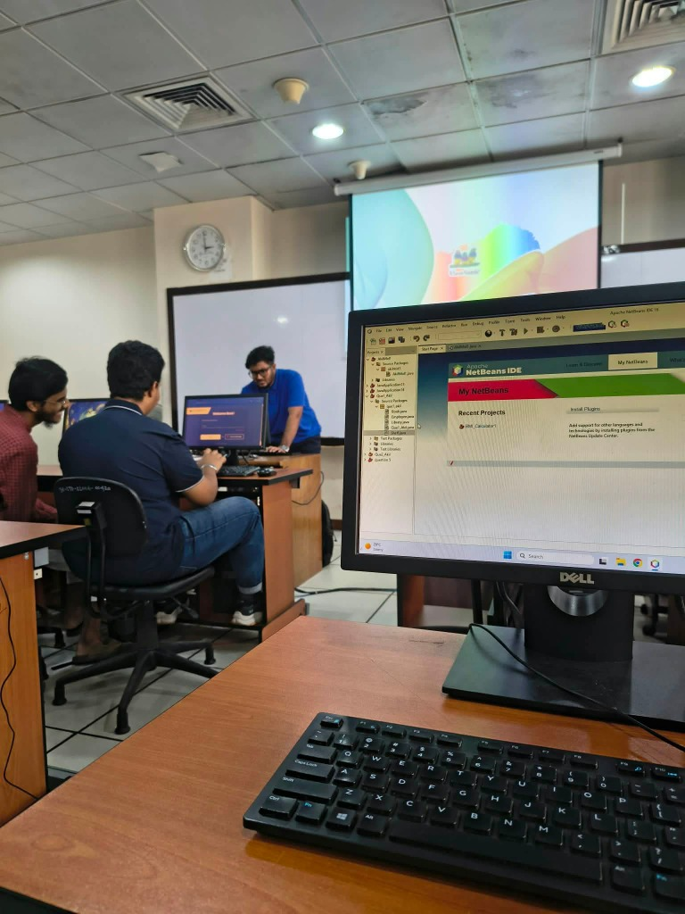

Alif, S. S., Arafat, M. Y., Nibir, M. M. I., Tusti, F. M., & Zereen, A. N. (2026). Multimodal fusion of visual and auditory biomarkers: An epoch-wise stochastic modality masking framework for stroke detection using a CNN--GRU network. Array, Vol. 30, 100787. (Elsevier; Impact Factor: 5.3, SJR Q1, Scopus Indexed).
Hassanuzzaman, M., Arafat, M. Y., Choudhary, T., ... & Kamaleswaran, R. Review on Foundation Models for Medical Time Series: Trends, Advances, Challenges, and Future Directions. Under review at Artificial Intelligence Review (Springer Nature; Impact Factor: 18.8, 2025). Supported by US NIH Grant GM139967.
Arafat, M. Y., et al., & Kamaleswaran, R. MM-CAST: Outcome-Blind, Severity-Aware Multimodal Phenotyping of Sepsis-Associated Acute Respiratory Failure via Calibrated Cross-Modal Discordance and Target-Trial Emulation. Kamaleswaran Lab, Duke University School of Medicine.
Arafat, M. Y., Alif, S. S., et al. Anatomically-Guided Federated Learning for Down Syndrome Facial Phenotype Detection: Dynamic Landmark Attention and Consensus-Based Aggregation. Achieved 98% test accuracy without centralizing sensitive patient data.

Awarded a competitive national research fellowship to lead engineering and verification for satellite On-Board Computer (OBC) subsystems:
Junior Research Fellow — Working under the Principal Investigator | National Fellowship
Collaborating on advanced multimodal physiological learning, generative modeling, and medical time-series architectures:
Research Intern — Supervisor: Dr. Rishikesan Kamaleswaran | Funded by US NIH Grant GM139967

Conducting embodied robotics and satellite subsystem flight software research:
Research Assistant — Supervisor: Dr. Shahnewaz Siddique | Funded by CTRG Research Grant & APSCO
Developed an interpretable multimodal deep learning framework fusing facial visual biomarkers (computer vision) and voice acoustic biomarkers (speech MFCC) for automated stroke screening:
Research Assistant — Supervisor: Dr. Aniqua Nusrat Zereen
Led research on pediatric Down syndrome detection using deep edge intelligence on 2D facial photography:
Research Lead / Assistant — Supervisor: Sadman Sakib Alif
Developed an automated computer vision framework for real-time impurity detection during the crystallization of Cephalexin, replacing conventional manual inspection with deep learning-based image understanding.
Course Research Project
Used machine learning techniques to predict oral drug-consumption rates and evaluate drug-likeness based on molecular descriptors.
Course Project

Appointed under official university contract to independently instruct 3 undergraduate laboratory sections (9 contact hours/week) plus 11 hours/week of student consultation (total 20 contracted hours/week):
Appointed across 5 consecutive academic semesters supporting 22 course sections in Operating Systems (CSE 325) and Digital Logic Design (CSE 232).
Awarded competitive national research fellowship for AI-enabled fault-tolerant On-Board Computer (OBC) design, FDIR software architecture, and Hardware-in-the-Loop (HIL) validation for CubeSats.
Selected as one of the Top 10 AI research trainees from North South University (out of 2,500+ applicants) for competitive AI research training. Applied computer vision and 3D point cloud processing (.las data) for stockpile volume estimation using Direct ensemble segmentation and Poisson reconstruction tracks.
Participating in an advanced curriculum on Python, machine learning, neural networks, SQL, and data-driven analytics hosted by the Matsuo-Iwasawa Laboratory, The University of Tokyo, Japan.
Participated in specialized training focused on software engineering, IT fundamentals, and Japanese-standard IT practices (Information Technology Engineers Examination).
Gained operational insights into large-scale distributed computing systems supporting foundation models, LLM/VLM inference, computer vision, and autonomous AI applications.